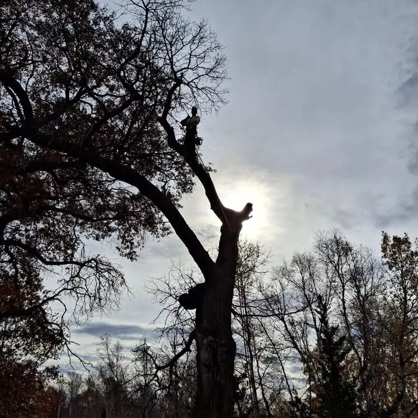

Tree Removal
Dead, leaning or unwanted trees taken down safely, with full cleanup.
Good pruning keeps your trees healthy, keeps limbs off your roof and makes them far less likely to break in the next storm.
A tree that is never pruned grows heavy, crowded limbs, collects dead branches and eventually starts reaching for your roof, gutters and siding. Regular trimming solves those problems before they turn into a removal or an insurance claim. It also gives the tree a stronger structure, which matters a lot in a place where summer thunderstorms and ice storms are part of life.

We don't "top" trees. Topping, cutting the main stems back to stubs, makes trees grow weak, crowded shoots and often leads to decay. Instead we make proper cuts at branch collars, so the tree can seal the wound, and we never remove more of the crown than the tree can handle in one season.

Timing matters here more than in many other states:
Branches touching the main lines on the street are the utility's responsibility, and only qualified line-clearance crews should work around them. For the service line running from the pole to your house, call us and we'll tell you what can safely be done.
If a tree has a lot of decay, a dangerous lean or is an ash tree in decline from emerald ash borer, trimming may only delay the inevitable. During our free estimate we'll tell you honestly whether pruning will fix the problem or whether removal is the better investment.
Most mature yard trees benefit from pruning every 3 to 5 years. Young trees do best with light structural pruning every year or two.
In winter. Avoid pruning oaks from April through July to reduce the risk of oak wilt.
No. Topping weakens trees and leads to decay. We use proper pruning cuts that keep the tree healthy.
Yes. All branches are chipped or hauled away and the yard is cleaned up when we finish.
Call or text for a free, no-obligation quote. We serve homeowners all across Blaine, MN.